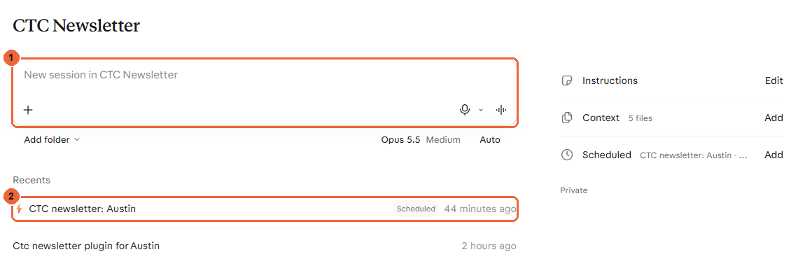

Step 4 of 4, every week
Every week
Claude does the lists. You make the calls and write the words.
Your week is three actions: start the run, reply once to the review, then rewrite three short blocks and send. With the weekly schedule on, the first is done for you.
Claude reads your settings and chapter log, says which send date it is building for, and starts. It asks nothing it already knows.

- ClaudeCollectEvery source on your list, and the reader submission form.
- YouReviewOne message, one reply.
- ClaudeBuildThe ten-block issue, every date and link checked.
- YouWrite and sendRewrite three blocks, paste into Substack, send.
Collect Claude
Claude reads every source on your list and the Climate Tech Cities submission form for your city. It collects everything and judges nothing yet. Luma and Eventbrite are read through your browser, which is why the Chrome extension is installed.
If the count comes back far below your normal week, Claude checks which sources returned nothing before going on. A thin list usually means a source broke.
Review You
Claude sends one message: every event, numbered, with the ones it proposes to cut and four to six proposed picks, then your open opportunities with three proposed for this issue. The same events are attached as a spreadsheet.
The message you answer
| No. | Proposed | Event | Host | Where | Access |
|---|---|---|---|---|---|
| 1 | Cut: a general data science seminar | AI for Load Forecasting: PSU Energy Seminar | Portland State University | Downtown | Free |
| 2 | Pick | Grid Interconnection 101 | Oregon Clean Power Cooperative | Pearl District | Free |
| 3 | Mass Timber Happy Hour | Tall Wood Design Institute | Southeast | Free | |
| 4 | Pick | Repair Cafe: Small Appliances, sent in by a reader | Repair PDX | St. Johns | Not stated |
The first four of 21 events, set as a table here. The message itself is a numbered list. Fictional Portland chapter.
Reply once
looks goodtakes the proposal as it standscut 7 and 12, keep 18, pick 5 instead of 2, opportunities 1 and 4changes it by number- Name an event that is not on the list and Claude adds it
- Answer part of it and Claude uses its proposal for the rest
Say what the calendars cannot know
- Your own event, a postponement, something happening in the city
- One line is plenty. The opening note is built from it
- Nothing to add? Say so. The note is drafted from the week itself
Prefer a spreadsheet? Delete the rows you do not want, type PICK beside your picks, and send the file back in place of a reply.
How Claude decides what to propose
Build Claude
From your reply, Claude opens every surviving link again, builds the issue and hands you one HTML file. Seven blocks are finished. Three are drafted for you to rewrite.
| Block | Who finishes it |
| 1. Title and subtitle | Claude |
| 2. Opening note | Claude drafts, you rewrite |
| 3. Picks of the week | Claude drafts from your picks, you rewrite |
| 4. Housekeeping and sign-off | Claude drafts from what you told it, you rewrite |
| 5. Climate Tech Cities and Streetlife Ventures platforms block | Fixed, never changes |
| 6. Opportunities | Claude, from the ones you chose |
| 7. This Week's Events | Claude, complete |
| 8. Upcoming Events | Claude, complete |
| 9. This Week in Detail | Claude, complete, one entry for every event in This Week's Events |
| 10. Join the fun (submit events, volunteer) | Fixed, never changes |
Blocks 2, 3 and 4 each sit under a yellow line: [REWRITE IN YOUR OWN WORDS, then delete this line] If you shared writing samples, the drafts already sound like you, and the yellow lines stay anyway. Claude can match how you write. It cannot know what you think of this week's events.
The build stops by itself on an event in the past, a lapsed deadline, a weekday that does not match its date, or an issue that does not match the events you kept. A Word copy is built only if you ask for one.
A finished issue
A real New York issue, shortened. Shading shows who wrote what.
Hi all,
Last week we pulled out our N95s once again as wildfire smoke subsumed the summer. The brown-orange skies, torrential rain, and tornado warnings have been stark reminders that climate change is here and now.
For such a global problem, we continually find hope and inspiration in local community. While the summer is a lot quieter, there's still plenty of ways to connect. Here are our picks for the week:
- Tomorrow embrace the tides at the 🌊 2026 Offshore Wind Innovator Program or make calls (and friends!) at the ⏳ Manhattan Climate Changemakers Hour of Action
- Thursday talk sustainable finance in Sheep's Meadow at the 🧺 BASIC NY Summer Social or join Climatebase in Midtown for 💬 Climate Conversations NYC
- Saturday is 💧 City of Water Day with events throughout the five boroughs
We've postponed Wednesday's Other Intelligence summit until later this year (too many people were out of town!) but are still looking forward to it in the Fall.
Til next week!
Alec, Sonam, and the Climate Tech Cities team
🌎 Climate Tech Cities and Streetlife Ventures Startup and Talent Platforms
Climate Tech Cities and Streetlife Ventures are launching new platforms to support climate founders, funders, and career transitioners. We can't wait to hear from you!
Fixed text and links, the same in every chapter, right after the sign-off.
💡 New York Climate Exchange Climate Tech Fellowship
A six-month hybrid program combining expert-led curriculum, mentorship, and non-dilutive funding. Applications due August 1.
- 🌊 2026 Offshore Wind Innovator Program: Q&A Social Hour
- ☀️ Solarpunk, Communes, & Co-Living Dinner Series: NYC Edition
- 🌱 Brooklyn Hour of Action
- 📊 Summer 2026 Lecture in Climate Data Science
- 🧺 BASIC NY Summer Social
- 💬 Climate Conversations NYC
- ♻️ The Circular Economists Meet-up: New York City: Jul 29
- ⚡ [INFRASTRUCTOURS] Midtown East / LIC: Aug 1
- 🦪 Volunteering Untapped NYC: Billion Oyster Project: Aug 8
🔌 WISE-NYC: August Lunch on AI in Sustainability
When: Tuesday, Aug 18
Where: New York, NY
This lunch discussion explores the paradox of AI adoption in sustainability work, examining both its practical benefits and environmental costs. Hosted by Parichat Wrolstad, the event brings together WISE Community members to share experiences with AI implementation and discuss responsible usage strategies.
🌿 A Community Reading Of Black Eco-Poetry Feat. Keenyn Omari
When: Wednesday, Aug 19
Where: New York, NY
Black Forest School presents a community reading of 40+ Black eco-poems from a collection spanning over 1,000 works in 20+ languages by 300+ poets. The event features live jazz accompaniment by flautist Keenyn Omari, an interactive poetry relay, and a temporary installation within Project EATS' urban farm setting.
One entry per event in This Week's Events, written from the event's own page.
Join the Fun!
Submit Events. Running something climate-related in the city? Tell us about it and it goes into next week's list. Submit an event
Volunteer. Climate Tech Cities runs on volunteers. If you want to help with events, the newsletter, or the chapter itself, say hello. Volunteer with Climate Tech Cities
Always last. Two fixed links: submit an event, volunteer.
The sign-off sits in the middle, not the end. Platforms, opportunities and listings follow it; Join the fun is last. Claude drafts all ten blocks. The three you rewrite are the words that are truly yours.
What you get back
A complete launch-scale issue exactly as Claude returns it, yellow rewrite lines still in. Fictional Portland chapter.
Write and send You
Paste
- Open the HTML file in your browser
- Click before the first word and drag to the bottom. Dragging carries the formatting and the links. A copy button does not
- Copy, then paste into a new Substack post
Write, check, send
- Rewrite the three marked blocks in your own words and delete each yellow line
- Search for a square bracket. Nothing in brackets ships
- Read it once top to bottom the way a subscriber would, clicking two or three links
- Send
Claude never sends, publishes or posts anything. After the build it records the issue in your chapter log, which is how next week knows which opportunities already ran.
What takes care of itself
| Every week | With the schedule on, the run starts the day before your send day and the review is waiting for you. Your computer has to be on with Claude open. If it misses, press Run now on the task or say "run the newsletter" |
| Every month | When your opportunities list is a month old, the weekly run refreshes it before it collects events |
| Every three months | The review message offers a source list refresh. Say "refresh sources" and it runs after that issue |
| Now and then | Claude asks once whether last week's issue went out, with your subscriber count and open rate, and keeps them in the log |
Say "show my calendar" to see when each of these falls. No schedule yet? Say "schedule the newsletter" in your project at any time. If three issues in a row carry fewer than about five events each, Claude offers every two weeks, once. Weekly stays the default.